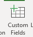
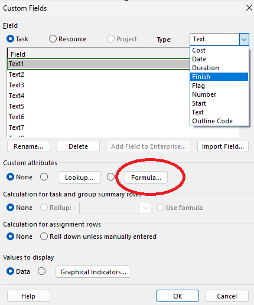
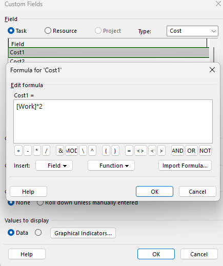
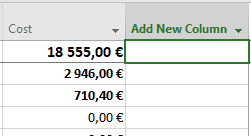
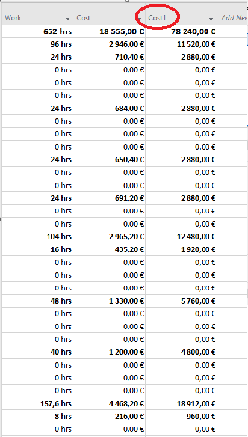

1. Custom Field avamine
Enda välja lisamiseks projektis tuleb vajutada nuppu Project → Custom Fields

2. Formula sisestamine
Avanenud aknas vali välja tüüp ja klõpsa Formula, et sisestada funktsioon

Minu näites korrutatakse töötunnid (Work) 2-ga

3. Uue veeru lisamine
Pärast valemi sisestamist lisa uus veerg → Add Column

Seejärel vali veeru nimi, kuhu valem kirjutati, ja rakenda see
4. Tulemus

Nüüd on veerus näha töötunnid korrutatuna kahega.